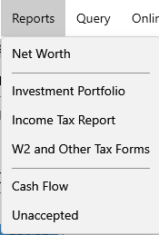

Reports#
MyMoney.Net provides various kinds of reports as you can see in the Reports menu:

- Networth Report
- Investment Portfolio
- Tax Report
- W2 Report
- Cash Flow Report
- Unaccepted Report
- Future Bills Report
All reports can be exported to HTML using context menu.
You can also use the Advanced Queries form if you just want to find a specific set of transactions matching your own custom criteria.